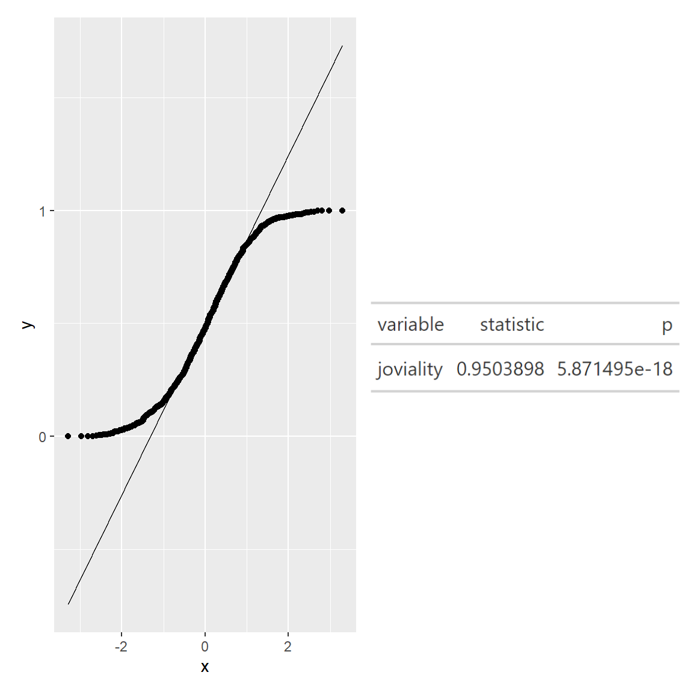
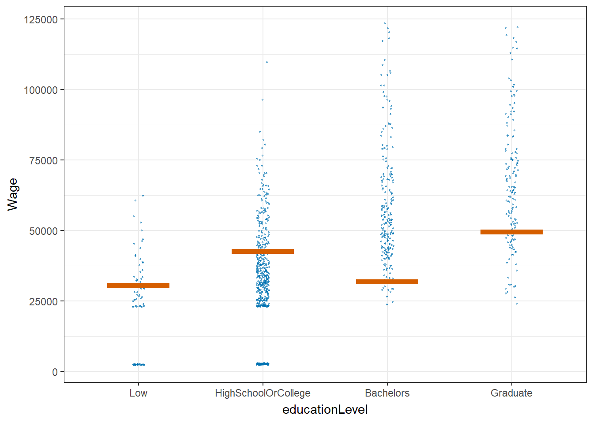

pacman::p_load(patchwork, tidyverse, ggstatsplot, ggdist, gganimate, png, gt,plotly, ggstatsplot, ggside, parameters,rstatix,reshape2, gridExtra,ggpmisc,ggscatterstats,ggplot2,ungeviz,treemap,ggridges, viridis)Take-home Exercise 1
Take home exercise 1
The Task
In this take-home exercise, you are required to apply the concepts and methods you had learned in Lesson 1-4 to reveal the demographic and financial characteristics of the city of Engagement by using appropriate static and interactive statistical graphics methods. This exercise requires a user-friendly and interactive solution that helps city managers and planners to explore the complex data in an engaging way and reveal hidden patterns.
Data Pre-processing
1. Load packages and read datasets
fin_data <- read_csv("data/FinancialJournal.csv")
part_data <- read_csv("data/Participants.csv")2. Data cleaning and preparation
change data types
#change participantId to characters fin_data$participantId <- as.character(fin_data$participantId) part_data$participantId <- as.character(part_data$participantId) #change education level to ordinal part_data$educationLevel <- factor(part_data$educationLevel, ordered=TRUE, levels=c("Low", "HighSchoolOrCollege", "Bachelors","Graduate"))change the format of timestamp
#save the datetime into date and month 2 formats fin_data$timestamp <- format(as.Date(fin_data$timestamp), "%Y-%m-%d") fin_data$year_mth <- format(as.Date(fin_data$timestamp), "%Y-%m")create a new table by converting financial journal to wide format (participantId as rows and categories as columns)
# Convert financial journal to wide format wide_fin <- pivot_wider(fin_data, id_cols = participantId, names_from = category, values_from = amount, values_fn = sum) # fill in NA with 0s (i.e. no transaction) in the resultant table wide_fin[is.na(wide_fin)] <- 0join the wide format financial journal table with the participant table by participantId
merged_df <- merge(part_data, wide_fin, by = 'participantId')calculate total income, total expenses and final balance (sum of all categories) for each participant
merged_df$expenses <- rowSums(merged_df[, c("Education", "Food", "Recreation","Shelter")]) merged_df$income <- rowSums(merged_df[, c("RentAdjustment","Wage")]) merged_df$balance <- rowSums(merged_df[, c("Education", "Food", "Recreation","RentAdjustment","Shelter","Wage")])Normality check and qq plot

qq <- ggplot(merged_df, aes(sample=joviality))+stat_qq()+stat_qq_line()
sw_t <- merged_df%>%
shapiro_test(joviality)%>%
gt()
qq <- ggplot(merged_df, aes(sample=balance))+stat_qq()+stat_qq_line()
sw_t <- merged_df%>%
shapiro_test(balance)%>%
gt()We can see that the points from both joviality and financial balance deviate significantly from the straight diagonal line, this is a clear indication that they are not normally distributed.
Outlier removal and histogram
This step is to remove “expenses” and “income” outliers. (to retain more data, I adjusted the 75%(Q3)/25%(Q1) quantile to 90%/10% quantile in the outlier formula respectively.
# Calculating the upper limit and Interquartile range for "expenses" and "income" IQR_income = IQR(merged_df$income) IQR_exp = IQR(merged_df$expenses) income_upper = quantile(merged_df$income,probs = 0.9)+1.5*IQR_income exp_lower = quantile(merged_df$expenses,probs = 0.1)-1.5*IQR_exp # Filtering out the outliers (too high income or expenses) merged <- merged_df %>% filter ((income <= income_upper) & (expenses >= exp_lower))
Show Code
#income histogram after outlier removal
mean_income = mean(merged$income)
std_income = sd(merged$income)
income_hist <- ggplot(merged, aes(income))+
geom_histogram(aes(y=..density..), fill = '#133337', color = '#eeeeee')+
stat_function(fun = dnorm, args = list(mean = mean_income, sd = std_income), col="#66cccc", size = .7)+
xlim(0, 200000)+
labs(title = 'Income histogram after outlier removal',
x = "total income")+
theme_minimal()+
theme(plot.title = element_text(hjust = 0.1, size = 10, face = 'bold'),
plot.margin = margin(20, 20, 20, 20),
plot.caption = element_text(face = "italic", size = 10),
panel.background = element_rect(fill = 'white'),
panel.grid.major.x = element_line(linewidth = 0.25, linetype = 'dashed', colour = '#bebebe'),
axis.text.x = element_text(face = "bold"),
axis.title.x = element_text(hjust = 0.5,face = "bold"))
#expenses histogram after outlier removal
mean_exp = mean(merged$expenses)
std_exp = sd(merged$expenses)
expenses_hist <- ggplot(merged, aes(expenses))+
geom_histogram(aes(y=..density..), fill = '#133337', color = '#eeeeee')+
stat_function(fun = dnorm, args = list(mean = mean_exp, sd = std_exp), col="#66cccc", size = .7)+
xlim(-35000, 0)+
labs(title = 'Expenses histogram after outlier removal',
x = "total expenses")+
theme_minimal()+
theme(plot.title = element_text(hjust = 0.1, size = 10, face = 'bold'),
plot.margin = margin(20, 20, 20, 20),
plot.caption = element_text(face = "italic", size = 10),
panel.background = element_rect(fill = 'white'),
panel.grid.major.x = element_line(linewidth = 0.25, linetype = 'dashed', colour = '#bebebe'),
axis.text.x = element_text(face = "bold"),
axis.title.x = element_text(hjust = 0.5,face = "bold"))
income_hist + expenses_hist
Data Visualisation
1. Total income, expenses and balance VS household size
From this line plot, we observe:
- Householdsize 3 has the highest total income (wage+rental adjustment).
- Total expenses (absolute value) increases as household size increases, which is expected.
- Householdsize 1 has the most balance (total income - expenses).
Show Code
#add a column to store absolute value of total expense
merged$expenses_abs <- abs(merged$expenses)
#filter income, expenses and balance columns and change to long format
merged_long <- merged %>%
select(householdSize,income,expenses_abs,balance) %>%
group_by(householdSize)%>%
summarise(avg_income = mean(income),
avg_expenses = mean(expenses_abs),
avg_balance = mean(balance)) %>%
pivot_longer(cols = c("avg_income", "avg_expenses", "avg_balance"), names_to = "type", values_to = "amount") %>%
ungroup()
#line plot
line_p1 <-merged_long %>%
ggplot(aes(x = householdSize, y = amount, colour = type))+
geom_smooth(alpha = 0.1) +
theme_classic() +
labs(title = "Total income, expenses and balance VS household size", x = 'household size', y = 'Total income, expenses and balance') +
scale_x_continuous(breaks = seq(0, 3, by = 1)) +
theme(plot.title = element_text(hjust = 0.1, size = 10, face = 'bold'),
plot.margin = margin(20, 20, 20, 20),
plot.caption = element_text(face = "italic", size = 10),
panel.grid.major.y = element_line(linewidth = 0.25, color = "#bebebe",linetype = 'dashed'),
panel.background = element_rect(fill = 'white'),
panel.grid.major.x = element_line(linewidth = 0.25, linetype = 'dashed', colour = '#bebebe'),
axis.text.x = element_text(face = "bold"),
axis.title.x = element_text(hjust = 0.5 ,face = "bold"))
line_p12. Expenses by age group
An interactive box plot is used to better visualize the expenses of different age groups. A new “age_groups” column was added with 10 years’ interval.
From the box plot, observed that:
- Age group “<20” has the highest average expense across all categories.
- Age group “21-30” has the lowest average expense across all categories.
- The participant with the maximum expense (32.6k) is from 31-40 group.
Show Code
# create age_groups with labels
merged$age_groups <- cut(merged$age,
breaks = c(10, 20, 30, 40, 50, 60),
labels = c("<20","21-30", "31-40", "41-50", "51-60"))
#income box plot
t <- list(
family = "Garamond",
size = 19,
face = "bold")
t1 <- list(
family = "Garamond",
size = 15,
face = "bold")
box <- plot_ly(
data = merged,
y = ~expenses_abs,
type = "box",
color = ~age_groups,
showlegend = FALSE,
boxmean = TRUE
) %>%
layout(title= list(text = "Box plot of total expenses in thousands by age group",font = t1),
xaxis = list(title = list(text ='Age Group', font = t1)),
yaxis = list(title = list(text ='Total expenses in thousands', font = t1)))
box3. Proportion of expenses by age group
To further understand the spending behaviors of each age group, a stacked bar chart is used to visualize the proportion of the average expenses (i.e. education, food, recreation and shelter).
However from the stacked bar chart, there is not much spending behavior difference observed across the five age groups. The biggest proportion is always shelter, followed by recreation, food, and lastly education. The proportion for recreation and food is comparable, while education only contributes a small portion to total expense.
Show Code
#calculate avg of each expense category by age group, then change the table to long format
merged_aggregated <- merged %>%
group_by(age_groups) %>%
summarise(avg_education = mean(Education),
avg_food = mean(Food),
avg_recreation = mean(Recreation),
avg_shelter = mean(Shelter)) %>%
ungroup() %>%
mutate(across(c(avg_education, avg_food, avg_recreation, avg_shelter), abs))%>%
pivot_longer(cols = c(avg_education, avg_food, avg_recreation, avg_shelter), names_to = "type", values_to = "value")
#plot the stacked bar chart
bar <- ggplot(merged_aggregated,
aes(age_groups, value, fill = type)) +
geom_bar(stat="identity") +
scale_fill_manual(values=c("#6666FF", "#99FFCC", "#FF99CC","#FFCC99"))+
labs(title = "Proportion of Flat types by Planning area in Singapore", x = "Planning Area", y = "Count", fill = "Flat Type") +
theme_minimal() +
theme(text = element_text(family = "Garamond"),
plot.title = element_text(hjust = 0.4, size = 15, face = 'bold'),
plot.margin = margin(20, 20, 20, 20),
legend.position = "bottom",
axis.text = element_text(size = 8, face = "bold"),
axis.text.x = element_text(angle = 90, vjust = 0.5, hjust=1),
axis.title.x = element_text(hjust = 0.5, size = 12, face = "bold"),
axis.title.y = element_text(hjust = 0.5, size = 12, face = "bold"))
ggplotly(bar)4. Expenses by education Level and interest group
After visualizing expenses VS age group, I am also interested in the expense patterns with education level and interest group.
In this section, a treemap is used for a quick overall glimpse of expenses across different education levels and interest groups. Graduate and bachelors are having higher expenses than college or lower education level. Interest group B/F has relatively high proportion across all education levels.
Show Code
#calculate average expenses for different education level and interest groups
merged_aggr_tree <- merged %>%
group_by(educationLevel,interestGroup) %>%
summarise(avg_expenses = mean(expenses_abs)) %>%
ungroup()
#plot treemap with size and color both representing expenses
treemap_area <- treemap (merged_aggr_tree,
index= c("educationLevel","interestGroup"),
vSize= "avg_expenses",
vColor = "avg_expenses",
type="value",
palette = "RdYlGn",
border.col = c("black", "white"),
title="expenses by educationLevel and interest group",
title.legend = "Average Expenses"
)5. Wage VS education level by using Hypothetical Outcome Plots
Hypothetical Outcome Plot (HOP) are used to visualize the uncertainty of wage for different education levels.
From the plot below, we can see that most of the time, bachelors and graduates can earn more than low or high school/college education level.
Show Code
#Wage VS education level HOP
hop <- ggplot(data = merged,
(aes(x = educationLevel,
y = Wage))) +
geom_point(position = position_jitter(
height = 0.3,
width = 0.05),
size = 0.4,
color = "#0072B2",
alpha = 1/2) +
geom_hpline(data = sampler(25,
group = educationLevel),
height = 0.6,
color = "#D55E00") +
theme_bw() +
transition_states(.draw, 1, 3)
anim_save('hop_animation.gif',hop)
hop
6. Correlation with joviality
Scatter plot is used to investigate which category among the 6 has good correlation with joviality.
There is no good correlation between joviality and education, food or shelter. While recreation shows positive correlation with joviality, the more the participants spend on recreation, the happier they are. Surprisingly wage and joviality are in negative correlation.
Show Code
# Define y as joviality
y_var <- merged$joviality
# Define x as the 6 categories (absolute value)
x_vars <- merged[, c("Education", "Food", "Recreation","RentAdjustment","Shelter","Wage")] %>%
mutate(across(c("Education", "Food", "Recreation","RentAdjustment","Shelter","Wage"), abs))
# Reshape the data to long format
df <- reshape2::melt(cbind.data.frame(x_vars, y_var), id.vars = "y_var")
# Create the plot
ggplot(df,aes(x = value, y = y_var)) +
geom_point(size = 1) +
coord_cartesian(ylim=c(0, 1))+
geom_smooth(method = "lm") +
facet_wrap(~ variable, scales = "free_x", ncol = 3) +
labs(x = NULL, y = "joviality") +
ggtitle("joviality correlation scatter plot") +
theme(plot.margin = margin(1, 1, 1, 1, "cm"))7. Recreation expenses over time
Since recreation shows a relatively good correlation with joviality, I did below animation to know about how recreation expenses changing over time.
The distribution of recreation expenses are more or less constant from early 2022 to early 2023, and it is slowly shifting right which means people tend to spend more on recreation over time.
Show Code
#filter recreation data and group by category
fin_aggr <- fin_data %>%
mutate(year_mth = as.Date(paste(year_mth,"-01", sep=""))) %>%
mutate(amount = abs(amount))%>%
filter(category %in% c("Recreation"))%>%
group_by(category)%>%
ungroup()
#density ridge plot animation over time
gg <- ggplot(data = fin_aggr, aes(x = amount, y = category, fill = after_stat(density))) +
geom_density_ridges_gradient(scale = 5, rel_min_height = 0.01, height = 5, width = 6) +
theme_minimal() +
labs(title = 'Recreation expenses {frame_time} ') +
transition_time(year_mth) +
theme(legend.position="none",
text = element_text(family = "Garamond"),
plot.title = element_text(face = "bold", size = 12),
axis.title.x = element_text(size = 10, hjust = 1),
axis.title.y = element_text(size = 10, angle = 360),
axis.text = element_text(size = 8)) +
scale_fill_viridis(name = "amount", option = "D") +
ease_aes('linear')
gg